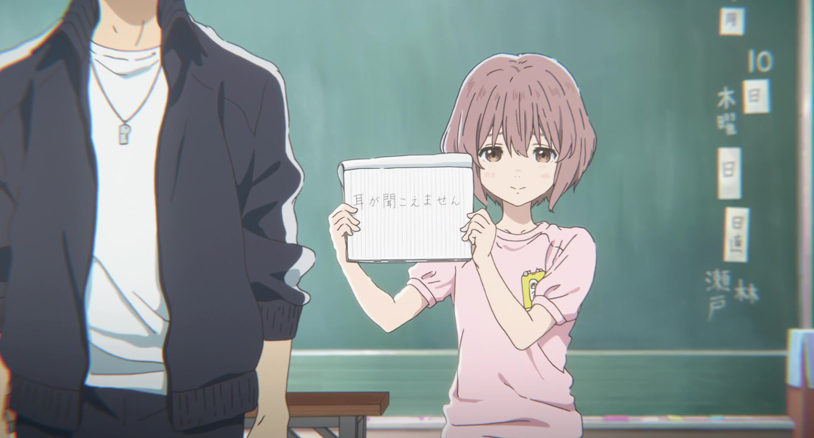
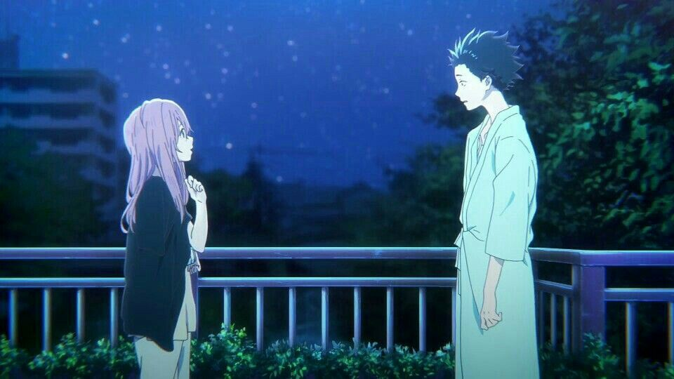
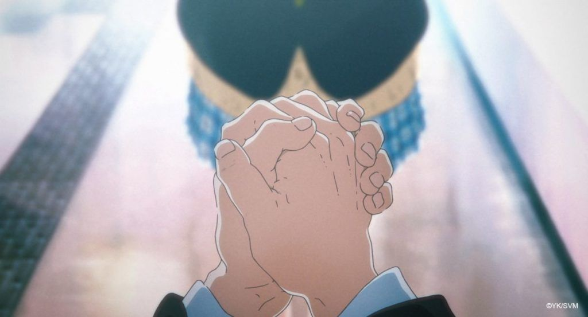

A Silent Voice

The Shape of Voice is a 2016 Japanese animated drama film produced by Kyoto Animation, directed by Naoko Yamada and written by Reiko Yoshida, featuring character designs by Futoshi Nishiya and music by Kensuke Ushio. It is based on the manga of the same name written and illustrated by Yoshitoki Ōima. The film covers elements of coming of age and psychological drama, dealing with themes of bullying, disability, forgiveness, mental health, suicide and platonic love, where it follows the story with compassion and understanding involves the former bully turned social outcast, who decides to reconnect and befriend the deaf girl he had victimized years prior.
A young man is ostracized by his classmates after he bullies a deaf girl to the point where she moves away. Years later, he sets off on a path for redemption. The story revolves around Shôko Nishimiya, a grade school student who has impaired hearing.


